A LITTLE CARE, EVERY DAY
天气有变化，
出门有准备。
看看你所在城市的天气，
把穿什么、带什么，一起想好。
无需定位。城市与体感偏好保存在此浏览器。

正在把这座城市的天气，整理成出门建议…

—°
最低 / 最高
YOUR EVERYDAY WARDROBE
今日穿搭推荐
用自己的衣服，搭一身。
导入照片、确认分类，按天气从你的衣橱挑选。
穿在身上
本机保存说明
切换日期或时段时，最近 12 组临时调整会留在当前页面，刷新后不保留。点击“记住”才写入本机，按城市、当地日期和时段分别保存衣物编号，不复制照片，最多保留最近 30 组。清除网站数据后会丢失；不云同步，不包含在衣橱备份和明日推送中。天气建议或衣橱变化后需要重新确认。
这套怎么选的？
照片用于展示单品，推荐依据你确认的衣物分类、厚薄与天气规则。
随身带着
全天预报参考更懂你的穿衣档案
加入身高、体重，让衣物更合适
你的体感
A LITTLE SUN CARE
阳光，也温柔应对
—信息暂缺
03811+
每日最大值不代表此刻强度，也不能确定精确高峰时段。
防护依据 · WHO 紫外线指引 ↗TONIGHT, FOR TOMORROW
明日提醒 · 今晚准备单
把明天的准备，
留在今晚。
设定你的时间，提前看看明天穿什么、如何防晒。
正在检查提醒服务…
A DAY IN SMALL MOMENTS
从早到晚，心里有数
点选时刻，看看出门时的体感。
THE WEEK AHEAD
接下来 7 天
所有温度区间使用同一刻度，长短可直接比较。